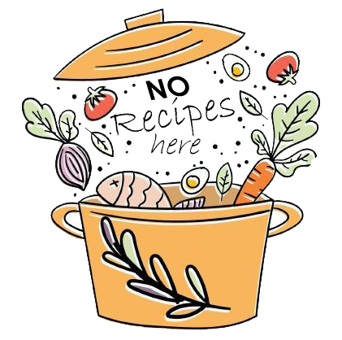

<app-navbar></app-navbar>

<!-- Modale aggiungi evento -->
<div class="modal fade" id="exampleModal" tabindex="-1" aria-labelledby="exampleModalLabel" aria-hidden="true">
  <div class="modal-dialog">
    <div class="modal-content">
      <div class="modal-header">
        <h1 class="modal-title fs-5" id="exampleModalLabel">{{selectedLabel}}</h1>
        <button type="button" class="btn-close" data-bs-dismiss="modal" aria-label="Close"></button>
      </div>
      <div class="modal-body">
        <form #form="ngForm">
          <div class="form-group mb-3">
            <label for="date" class="form-label">Insert a date</label>
            <input type="date" class="form-control" name="date" id="date" required ngModel>
          </div>
        </form>
      </div>
      <div class="modal-footer">
        <button type="button" class="btn-annulla px-4 py-2" data-bs-dismiss="modal">Close</button>
        <button type="button" class="btn-confirm px-4 py-2" [disabled]="form.invalid" data-bs-dismiss="modal" (click)="addEvent(form, selectedLabel)">Confirm</button>
      </div>
    </div>
  </div>
</div>

<div class="container py-5">
  <h1>Calendar</h1>
  <hr>

  <div class="row">
    <!-- Calendario -->
    <div class="col-12 col-lg-6 py-4">
      <full-calendar [events]="calendarEvents" [options]="calendarOptions"></full-calendar>
    </div>

    <!-- Lista Preferiti -->
    <div class="col-12 col-lg-6 py-4">
      <div class="ps-lg-5">
        <h2>Favorite recipes</h2>
        <div *ngFor="let fav of favs | paginate: {itemsPerPage: 5, currentPage: paginaCorrente}">
          <div class="d-flex justify-content-between align-items-center my-3" style="background-color: #88D398;">
            <div class="d-flex align-items-center">
              
              <div class="p-2">
                <p class="fw-bold m-0">{{fav.label}}</p>
                <p>{{fav.source}}</p>
              </div>
            </div>
            <div class="me-3">
              <div>
                <a class="" [routerLink]="['/recipes', fav.uri.split('#')[1]]"><i class="bi bi-eye" style="background-color: #EC4E1F;"></i></a>
              </div>
              <div>
                <button class="p-0 border-0" (click)="selectedLabel=fav.label;" data-bs-toggle="modal" data-bs-target="#exampleModal"><i class="bi bi-calendar-plus" style="background-color: #345834;"></i></button>
              </div>
            </div>
          </div>
        </div>
        <div class="text-center py-5" *ngIf="favs.length < 1">
          
        </div>
        <div class="text-center my-5">
          <pagination-controls (pageChange)="paginaCorrente = $event"></pagination-controls>
        </div>
      </div>
    </div>
  </div>
</div>

<app-footer></app-footer>
